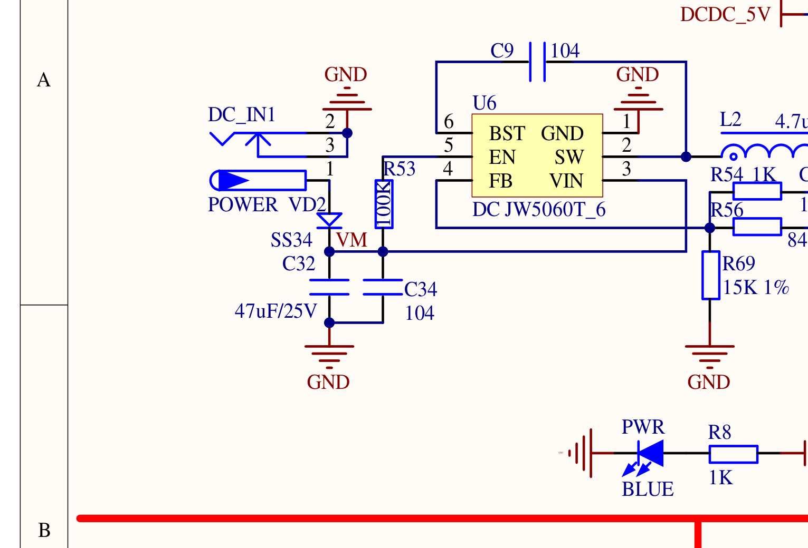

二极管家族：整流、肖特基、齐纳、TVS、LED
它们外形几乎一样，都是一端带条线的黑色小方块，但干的事完全不同：整流（只让电流单向走）、防反接（接反了也不炸）、钳位（把电压摁住）、稳压（用一个反向击穿换稳定电压）、发光。选错的后果从「效率低一点」到「整板冒烟」。这一章用本板 SS34、SMBJ5.0A、R8 蓝光 LED 把每个家族的账算清楚。
读完这一章，你应该能
- 解释 Vf 从 0.2V 到 3V 的差别来自什么（材料、结构、颜色）
- 用恒压模型算整流/防反接的压降与损耗，并判断该不该换 MOS 理想二极管
- 读懂 TVS 的 VRWM/VBR/VC/IPP/结电容，知道它该放在哪
- 算出 LED 限流电阻，并解释为什么 3.3V 驱动蓝光 LED 只有 0.3mA
- 用万用表二极管档在板上判断好坏，避开「在路测量」的陷阱
1.6.1PN 结：为什么硅是 0.7V、肖特基是 0.3V
二极管的全部行为来自一个 PN 结：P 区多空穴、N 区多电子，交界处形成耗尽层与内建电场。加正压时耗尽层变薄、载流子越过势垒 → 导通；加反压时耗尽层变厚 → 只有极小的漏电流。
这个「势垒高度」就是正向压降 Vf：
- 硅 PN 结：约 0.6–0.7V（小信号 1N4148 ≈0.7V）；
- 肖特基（金属-半导体结）：0.2–0.4V，因为势垒更低，这也是它效率高的原因；
- LED：1.8–3.4V，取决于材料带隙（红 1.8–2.0、绿 2.0–2.4、蓝/白 2.8–3.4）；
- 齐纳：正向也是 0.7V，但反向在 Vz 处「击穿」并稳定工作。
温度会改变 Vf：硅二极管约 −2mV/°C（温度升高，Vf 降低）。肖特基也类似。这个系数在做「用二极管做温度传感器」时是优点，在用二极管做基准时是缺点。
1.6.2三种模型：从理想开关到指数曲线
工程计算不需要每次都解指数方程，按精度选模型：
| 模型 | 假设 | 适用 | 误差 |
|---|---|---|---|
| 理想开关 | 导通 0V、截止断路 | 只看逻辑方向、粗略估电流 | 压降全忽略，小电压电路误差大 |
| 恒压降 | 导通固定 Vf（硅 0.7、肖 0.3） | 电源、限流、防反接 | 小电流时偏大，大电流时偏小 |
| 指数（Shockley） | I = Is(eV/nVT − 1) | 精密、仿真、对数电路 | 需要 Is、n 参数 |
VT = kT/q ≈ 26mV（室温）。这个 26mV 很重要：它决定了「Vf 每变 60mV，电流变 10 倍」——所以二极管两端电压的小变化会引起电流的巨大变化，这也是为什么二极管不能直接并接在电源上。
1.6.3防反接：SS34 的真实代价

SS34 在 1A 时 Vf 约 0.4–0.45V，于是：
Ploss = Vf × I = 0.45 × 1 = 0.45W；若整板 2A：0.5×2 = 1W
1W 在 SMA 封装（θJA 约 100–150°C/W）里温升 100–150°C——所以这种板子在大电流时不用二极管防反接，而用 PMOS 理想二极管：导通时 Rds(on) 只有几十 mΩ，2A 下损耗 0.4²×0.05 ≈ 8mW，比二极管低两个量级。
判据：电流 < 0.5A 用肖特基就行；>1A 且在意效率/发热，就上理想二极管或 PMOS 反接保护。
1.6.4肖特基 / 快恢复 / 普通整流：三张牌
| 类型 | Vf | 反向恢复 trr | 反向漏电 | 典型用途 |
|---|---|---|---|---|
| 普通整流（1N4007/M7） | 0.9–1.0V | ~30µs（很慢） | 小 | 50/60Hz 整流、防反接（低频） |
| 快恢复（ES1J/F1K） | 0.9–1.3V | 150–500ns | 小 | 开关电源、续流、高频整流 |
| 肖特基（SS34/MBR0520） | 0.3–0.55V | 几乎无（多数载流子） | 较大，随温度上升 | Buck 续流、防反接、低压整流 |
关键取舍：肖特基压降低、速度快，但反向漏电大（µA–mA 级，高温更糟）。所以高压、高温场合反而不选肖特基；而 Buck 的低压续流非它不可（用普通二极管 trr 太慢，损耗巨大）。
1.6.5TVS：把电压「摁住」的那道闸
TVS 是「专门用来被击穿」的二极管。正常时它截止（只有漏电）；电压超过击穿点，它瞬间导通，把能量引到地，把电压钳在一个安全值。板上两颗：D1 = SMBJ5.0A（单向，5V 系统）、D2 = SMBJ3.3A（单向，3.3V 系统）。
读 TVS 规格只看五个数：
- VRWM（反向工作电压）：正常能扛的最高电压。SMBJ5.0A 是 5.0V，所以它接在 5V 轨上刚好。
- VBR（击穿电压）：开始导通的电压，通常 VRWM 的 1.1–1.3 倍。
- VC（钳位电压）：在指定 IPP 下的最高电压——这个值必须低于后级器件的绝对最大耐压。
- IPP（峰值脉冲电流）：能承受多大的浪涌（配合波形 10/1000µs）。
- Cj（结电容）：高速线（USB、以太网）上大结电容会伤信号，要选低容 TVS 或 ESD 阵列。
放置原则：越靠近接口越有效（先钳位再进板），且 TVS 与受保护器件之间不要串长走线/大电阻，否则钳位能量还会耦合进去。另外 TVS 只能「扛一下」，长期过压它会烧——它不是稳压器。
1.6.6LED：为什么 3.3V 点蓝光只有 0.3mA
LED 的 Vf 由材料带隙决定：红 1.8–2.0V、绿 2.0–2.4V、蓝/白 2.8–3.4V。板上 PWR 指示灯就是蓝光：R8 = 1K，串在 3.3V 与 LED 之间。代入：
I = (3.3 − 3.0)/1k ≈ 0.3mA，PR8 ≈ 0.09mW
0.3mA 对蓝光 LED 是「微亮」——这是设计者刻意压低的待机指示亮度，也说明 3.3V 驱动蓝光 LED 余量很小（只剩 0.3V）。如果换成 5V 供电、同样 1K：I=(5−3)/1k=2mA，亮度明显提升；若想 10mA，就要 R=(3.3−3.0)/10mA=30Ω（且要注意 LED 的 Vf 离散性，可能一批亮一批不亮）。
这就是「红光好驱动、蓝光难驱动」的工程原因：不是电阻问题，是 Vf 与电源电压太接近，工作点极不稳定。
1.6.7齐纳：用一个「可控击穿」做稳压
齐纳二极管工作在反向击穿区：电压到 Vz 就基本不再上升，多余的电压由串联电阻承担。设计两条：
R = (Vin − Vz)/(Iz + Iload)
- Iz 不能太小（否则不稳、噪声大），典型取 1–5mA；
- Iz 不能太大（否则功耗超限），要满足 Pz = Vz×Iz < 额定。
算例：12V 输入、5.1V 齐纳、负载 10mA、取 Iz=5mA：R=(12−5.1)/15mA=460Ω（取 470Ω）。此时齐纳功耗 5.1×5mA≈26mW，1/4W 器件完全够。但输入变到 24V 时，Iz 会涨到 (24−5.1)/470=40mA，齐纳功耗 204mW，接近极限——所以齐纳稳压只适合「输入变化不大、负载很轻」的场合。板上这种场合已经被 LDO 取代。
1.6.8小信号二极管：钳位与防倒灌
板上还有几颗「不显眼但关键」的小二极管：D3/D4（RB521S-30，肖特基 30V/200mA）用在 USB OTG 的 VBUS 路径上，做防倒灌——防止外部 5V 反灌进板内电源；BAT43WS 用作快速钳位。它们的共同特点：Vf 低（0.3V 级）、结电容小、封装极小（SOD-323/SOT-23）。
在信号线上，这类二极管常做两件事：
- 钳位：信号超过 VDD+0.3V 时导通到电源轨（配合 TVS/ESD 阵列），保护芯片输入；
- 防倒灌：两个电源域之间只允许单向供电。
1.6.9怎么测：二极管档与三个陷阱
- 二极管档：红笔正、黑笔负 → 显示 0.4–0.7V（硅）或 0.15–0.3V（肖特基）；反过来显示 OL。两个方向都通 = 击穿短路；两个方向都不通 = 开路。
- 在路测量会被并联路径骗：板上二极管常与其他元件并联，正反向都可能「通」。判断要拆一端，或结合电路分析。
- 看压降判断型号：0.5V 左右多半是硅，0.2V 左右是肖特基；但同封装不同型号压降可能只差 50mV，不能作为唯一判据，最终要看丝印/料号。
两条最常见的错误
① 把 TVS 当稳压用：TVS 的击穿电压容差很大（±5%~±10%），且长期工作在击穿区会烧，不能替代 LDO/齐纳。
② 肖特基反向漏电没算：高温下漏电可达 mA 级，反接到电池的场景会慢慢把电耗光；用在「电池防反接」时，要选低漏电型号或改用 PMOS。
1.6.10四个选型误区
- 防反接只看「能不能防」，不看压降损耗。1A 以上就该算损耗，必要时换 PMOS。
- TVS 只看功率，不看钳位电压。VC 高于后级耐压等于没保护。
- LED 不按 Vf 分布设计。蓝光在 3.3V 下工作点极窄，批次差异会让亮度差一倍。
- 把肖特基当万能。高压、高温、低漏电场合它并不合适。